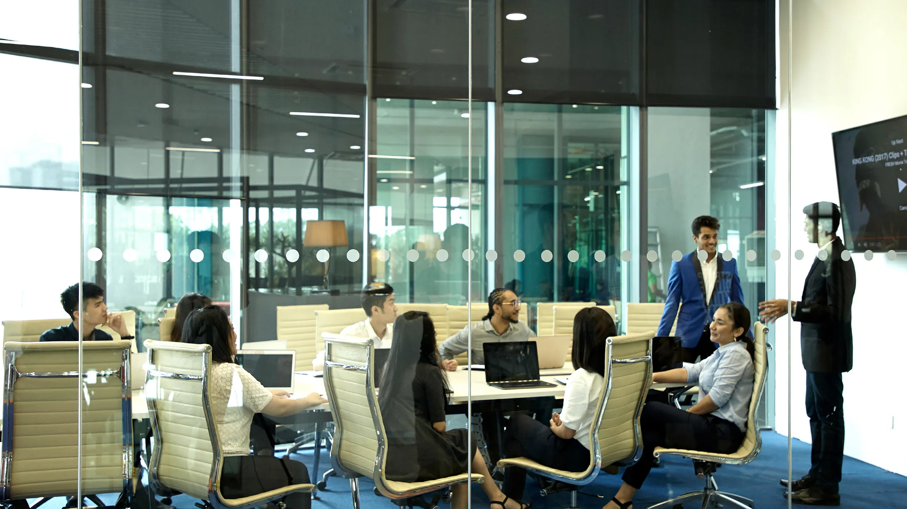
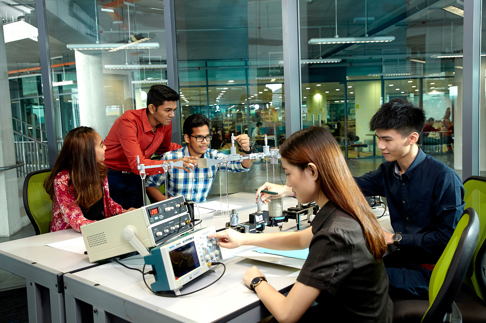

About Asia Pacific University of Technology & Innovation (APU)
Founded in 1993 originally as the Asia Pacific Institute of Information Technology (APIIT), Asia Pacific University of Technology & Innovation (APU) has grown into one of Malaysia's premier private universities. Located in Technology Park Malaysia (TPM), Bukit Jalil, Kuala Lumpur, APU is renowned for offering technology-driven, industry-focused education that prepares graduates for high-demand digital global careers.
Ranked in the top 2% globally in the QS World University Rankings (#528) and the first university in Malaysia to achieve the prestigious QS 5-Stars Plus rating, APU maintains a 100% graduate employability record. Recognized by MDEC as a Premier Digital Tech Institution, APU partners with industry leaders like Microsoft, AWS, Cisco, and IBM, and offers dual degrees with De Montfort University (DMU), UK.
Campus Life

Discussion Room

Campus View
.jfif)
Campus Events

Engineering Lab
Campus & Facilities
Designed as an ultra-modern, sustainable tech ecosystem, APU’s state-of-the-art campus in Technology Park Malaysia (TPM), Bukit Jalil features "The Spine"—an architectural corridor connecting learning spaces, innovation labs, and social hubs. The campus integrates state-of-the-art tech infrastructure with modern student amenities.
- CyberSecurity Talent Zone: Malaysia's first military-grade Cyber Range and Security Operations Centre (SOC) for real-world threat defense training.
- AI & Supercomputing Infrastructure: High-performance computing labs supporting AI, deep learning, and big data analytics research.
- Financial Trading Centre: Real-time financial trading simulator integrated with live global market feeds for Fintech and Actuarial science.
- XR & Metaverse Studio: Extended Reality studio equipped with VR/AR headsets for immersive application and game development.
- High-Tech Library & Learning Hub: Multi-tiered digital resource hub featuring private study capsules, discussion pods, and quiet zones.
- eSports Centre & Media Hub: High-performance gaming arena and digital media green-screen production studios.
- On-Campus Student Residence: Modern living spaces with access to swimming pool, gym, communal lounges, and 24/7 security.
- International Food Court: Diverse multi-cuisine dining options and eco-friendly social spaces along "The Spine".